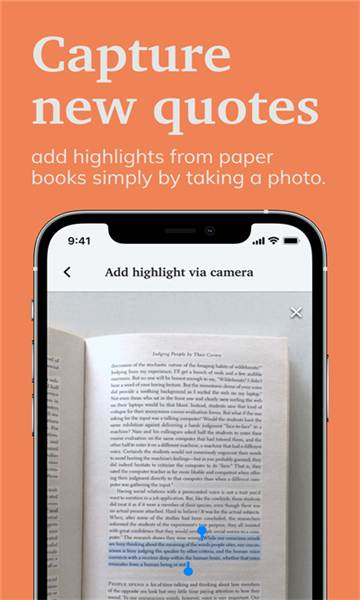
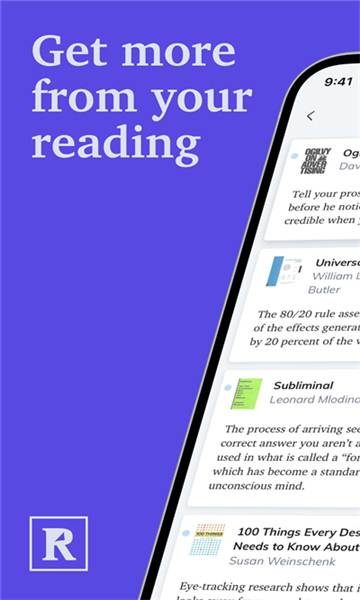

试过十几款阅读复习工具后，我为什么把 Readwise 留在了主力位
当大家都在做"AI 阅读器"和"知识图谱"的时候，Readwise 凭三个不太起眼的差异化，稳稳站在了阅读复习这个窄赛道的第一梯队。
这个赛道里它排第几
阅读类工具这些年热闹得很——大厂做全家桶、独立开发者做单点神器、AI 浪潮下又扎堆往里塞大模型。但如果把筛选条件收窄到「把你散落在各处的高亮真正变成记忆」，可选面一下子就清晰了：大部分工具要么停留在"聚合"这一步，要么复习机制太粗糙，要么把重心跑偏去做社区和 AI 聊天。
Readwise 是少数把这条窄路走得足够扎实的选手，去它的官网就能看出来。它在这个细分品类里排不到前三，但绝对在第一梯队——而且跟其他梯队成员相比，它走的路不太一样。别的工具要么往知识图谱方向卷、要么往全能阅读器方向卷，Readwise 始终钉在「间隔重复 + 高亮聚合」这条主线上，偶尔长出 Reader 和 Ghostreader 这样的分支，但根没挪过。
这也是为什么我单独写它。在工具选择上我有个执念：功能堆砌得再多，如果没把核心的一件事做透，迟早会被淘汰。Readwise 反过来了——功能数不算多，但每个核心点都做在这个品类的关键路径上。
三个差异化：别家没做好或没做的
来源聚合的宽度和深度
大多数同类工具的同步来源就那么几个：Kindle、Pocket、Apple Books、浏览器书签——做到这里就算及格了。Readwise 的来源清单长到有点离谱：除了上面这些常规选手，还有 Notion、Twitter/X、Medium、Substack、PDF、EPUB、RSS，甚至还有自己拍的实体书 OCR。
真正让我惊艳的不是数量，而是同步质量。Kindle 的高亮同步很多工具都做，但大部分只能拿到 Kindle 商店里买的书；Readwise 连你从 Calibre 导进去的 mobi 都能同步高亮——这对有大量非 Kindle 渠道书的用户是刚需。实体书 OCR 这个功能更像"彩蛋"但很戳人：对着荧光笔画过的那页拍个照、框一下高亮段，几分钟就能变成库内一条可复习的高亮。OCR 识别率够高，中文也能认，比我以前买过的专门做书籍扫描的小工具还好用。

频率调优：让算法听你的
间隔重复算法本身是个黑盒——大多数工具给你三个档位（轻松/正常/密集）就完了。Readwise 把频率控制下放到了每条文档级别：你可以给某本书设"降低频率"让它每月只来一次，也可以给正在做项目相关的文章设"提高频率"让它隔三差五冒头，实在太熟的可以归档不让它再占复习位但也不丢数据。
这在实际使用中差别太大了。默认算法对所有高亮一视同仁，但一本书里 50 条高亮可能只有 5 条是真金白银，剩下 45 条是画的时候觉得好、后来发现也就那样。频率调优让你能把复习预算集中在真正重要的内容上，而不是被一堆"假高亮"蚕食。我做项目期间会把相关的书全部调到"提高频率"，那段时间 Daily Review 推送的命中率能提升大概一倍。
标签体系的双层设计
Readwise 的标签分两个层次：文档标签和高亮标签。文档标签打在整本书或整篇文章上，用来创建虚拟书架——比如 创业阅读、2025 已读完、想重读，点一下就能看到这一批书。高亮标签打在单条高亮上，粒度更细，适合标记主题或行动项。
看起来简单，但大多数同类工具的标签要么只有一层、要么跟其他工具的标签对不上。Readwise 在导出时把两者区分开：文档标签到 Notion 里变成文档属性、到 Obsidian 里变成 frontmatter tag；高亮标签则每条高亮自带 tag。这个设计意味着你在 Readwise 里花时间搭的标签体系不会白费，到了下游知识管理工具里还能继续用——关于标签的详细玩法可以翻一下 Readwise 的文档。
取舍：天下没有免费的午餐
三个差异化的背后，Readwise 也做了一些取舍——有些是主动的，有些更像是它选择这条路后被动付出的代价。
上手门槛偏高。这不是界面复杂那种门槛，而是一种"你得先想清楚自己的阅读流程"才好用的门槛。刚注册的用户很容易被 Daily Review 邮件轰炸搞烦，因为默认频率对新用户来说太激进了。我建议新注册的前两周先关掉 Daily Review 推送，先把同步和导入跑通、把频率调到舒服的节奏，再逐步打开复习。实体书 OCR 那个功能看起来简单，但拍得不好识别率会掉，也有学习成本。
平台覆盖有短板。Reader 阅读器的桌面端支持 Mac 和 Windows，但 Linux 没有；移动端 iOS 和 Android 都有，安装包从官方下载就能拿到。不过 Reader 本身不如一些专门的阅读器功能全——没有自定义 CSS、没有主题切换、批注能力比 Apple Books 弱。如果你重度依赖 Linux 或者需要一个功能完备的独立阅读器，Reader 可能替代不了你的主力。
AI 功能偏克制。Readwise 有 Ghostreader 做问答和摘要，但它的定位始终是"辅助工具"，没有把 AI 做成产品中心。跟那些上来就说"AI 帮你总结所有书"的工具比，Readwise 的 AI 存在感弱得多——对很多用户来说这反而是优点，因为至少不会让你产生"工具在替你读书"的错觉。但如果你就是冲着 AI 来的，它可能不是你的菜。

选购结论：什么样的人选它
如果你满足下面三条中的两条，Readwise 大概率值得买：
- 你的高亮散落在 三个以上不同平台（Kindle + 实体书 + 网页收藏 + 笔记应用），试过重聚合但没一个能收全
- 你真的想 记住读过的东西——不是"存起来以后看"，而是过几个月还能回忆起某段话讲了什么
- 你已经有一套下游工具（Notion、Obsidian 或 Roam），想让高亮无缝流过去继续加工
反过来，如果你只在 Kindle 一个平台看书、高亮同步需求不强，或者你就是想找个"全能阅读器+AI 聊天机器人"一站式解决，那 Readwise 可能太重了——同类里有更轻量的方案，也有功能堆砌更猛的选手。
最后说一句明确的：如果你的阅读平台杂、又有复习执念，Readwise 就是这个品类里目前最值得你掏钱的那个。
这套 Readwise 的参考资料在 GitHub、Gitee、GitCode 都同步维护了一份文档目录，按需取用就行。